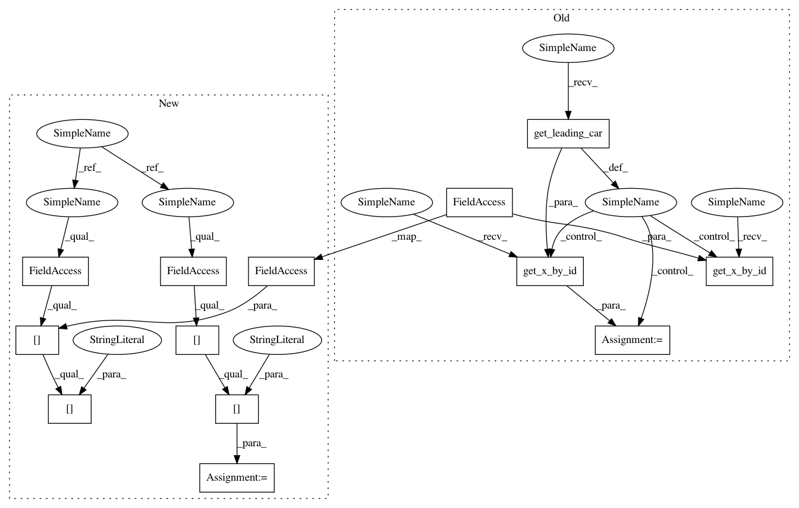

32b94d43a666a0aacd814273640d22ec17460a5e,cistar-dev/cistar/controllers/velocity_controllers.py,FollowerStopper,get_action,#FollowerStopper#Any#,51
Before Change
def get_action(self, env):
this_lane = env.vehicles[self.veh_id]["lane"]
lead_id = env.get_leading_car(self.veh_id, this_lane)
if not lead_id: // no car ahead
return self.acc_max
lead_pos = env.get_x_by_id(lead_id)
lead_vel = env.vehicles[lead_id]["speed"]
lead_length = env.vehicles[lead_id]["length"]
this_pos = env.get_x_by_id(self.veh_id)
this_vel = env.vehicles[self.veh_id]["speed"]
deltaV = lead_vel - this_vel
deltaX0 = np.array([4.5, 5.25, 6]) // initial values
After Change
if not lead_id: // no car ahead
return self.acc_max
lead_pos = env.vehicles[lead_id]["absolute_position"]
lead_vel = env.vehicles[lead_id]["speed"]
lead_length = env.vehicles[lead_id]["length"]
this_pos = env.vehicles[self.veh_id]["absolute_position"]
this_vel = env.vehicles[self.veh_id]["speed"]
deltaV = lead_vel - this_vel
deltaX0 = np.array([4.5, 5.25, 6]) // initial values
In pattern: SUPERPATTERN
Frequency: 3
Non-data size: 13
Instances
Project Name: flow-project/flow
Commit Name: 32b94d43a666a0aacd814273640d22ec17460a5e
Time: 2017-07-10
Author: eugenevinitsky@airbears2-10-142-37-62.airbears2.1918.berkeley.edu
File Name: cistar-dev/cistar/controllers/velocity_controllers.py
Class Name: FollowerStopper
Method Name: get_action
Project Name: flow-project/flow
Commit Name: d0d09e71d5cd8d6a3301224049a342aae677930b
Time: 2017-07-10
Author: akreidieh@gmail.com
File Name: cistar-dev/cistar/controllers/car_following_models.py
Class Name: CFMController
Method Name: get_action
Project Name: flow-project/flow
Commit Name: d0d09e71d5cd8d6a3301224049a342aae677930b
Time: 2017-07-10
Author: akreidieh@gmail.com
File Name: cistar-dev/cistar/controllers/car_following_models.py
Class Name: BCMController
Method Name: get_action